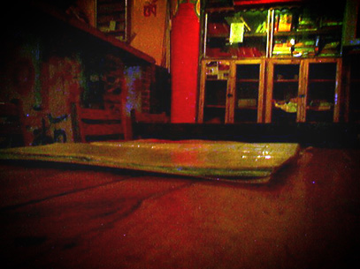
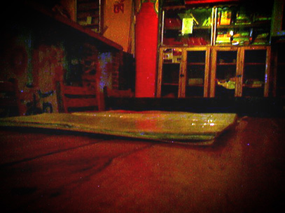

住在“天涯”，“没有”吃饭
8/30/2005 8:41:50 PM
走了几间最终我们选择了住在“天涯”bar，
可能是直觉吧，觉得这里会有新鲜的故事。
没想到，会在这里发生这么多，这么多。
如果我下次回去，我想我还是会去“天涯”，
那里有我想念和信任的人。
我们当然不是没事吃饭，而是去了一间叫做“没有”的餐厅吃晚饭。
呵呵~
“没有”在那一带是比较有名的，那里的“没有特色烤饭” 我印象很深刻，
实在太好吃了！
嘻嘻。
晚上，回“天涯”泡Bar，遭遇小唐。一切的思绪在那个时候开始变得暧昧...
PS：上传几张在“没有”拍的照片。

 
